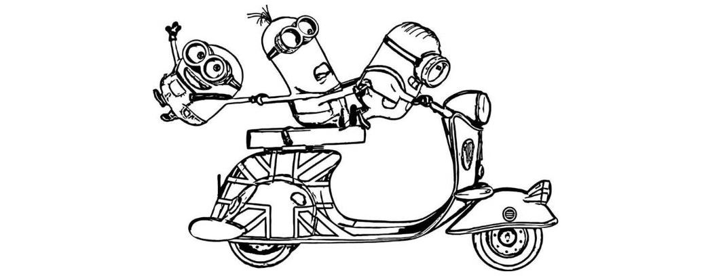

Future of Electric Cars, no banana
You might be wondering why I feel great about my choice of college, two months into computer science at National College of Ireland and they already helped me discover that I enjoy blogging. It demands a fair amount of research and courage to speak your mind, but besides the possibility to get frustrated, it’s great fun.
Anyhow, today we will synchronize with the future and download files of “The Future of Electric Cars”. So, I will jump in my pyjamas, take a sip of the hot reviving brew and let myself to be caught up in a fantasy of future cars and “Despicable Me” movie.
Gru: "Assemble the minions”
An electric car is an automobile that is propelled by one or more electric motors, using electrical energy stored in rechargeable batteries. At first, it seems so insignificant that we always think about the fuel, that is renewable and cheaper. But beneath the surface of the story, electric cars are more than the battle between green energy and fossil fuel, they embrace the most challenging visions of the future.
They fight to prevent the destruction of our ecosystem, they embrace latest technologies like wireless systems to charge cars by simply pulling up in a parking space, internet connectivity, remote control apps, sensor information systems, and more. But I’m not here to reveal secret or confidential information, I here to investigate the future. (“Gru: I'm going to need a dozen robots disguised as cookies”)
Driving is the most complex action
Let's bite into a simple slice of future life, electric cars will always apply the latest technology possible to amaze their customers. Inspired by the tales of Machine Learning that has recently surfaced to mass media, I believe that they will love to own this piece of technology to create self-driving cars.
Driving is maybe one of the most complex actions humans do every day. It involves dozens of decisions every second and we don’t even realise it. To program a machine to drive involves a lot of sensors and a lot of data to be processed. Is a tremendous amount of work for us to program artificial intelligence systems, ultimately machine learning will save the day, imagine if cars can learn on their own, like a human driver, to asses’ risk factors and anticipate an accident. [the minions pull out their weapons]
Artificial Intelligence
Artificial intelligence is a field of studying the design and analysis of machine learning algorithms. Basically, it’s a set of mathematical relations that uses logic and software to produce an output with our given specifications. These relations are like shortcuts to our problems, like instead of travelling from Ireland to France by car we’ll travel on a plane. The plane is an algorithm in this case. (“Gru: Hey mom! I build a rocket based on the macarroni model!”).
I’m confused myself even though I preaty good in math, atleast I though i was. To make it worse many learning algorithms generate complex models that are difficult for a human to interpret, debug, and extend. There is really no escaping from its influence and I am confident that cars will be equipped with these learning algorithms in the future. (“Gru: [screams, holding a frying pan for protection] Where did you get that?”)
So, no Bananna..
If we observe how technology comes together we can prophesy that personal cars will become history. Just think about it. Cars are expensive to buy, its already costing us too much to upkeep, and more cars on the road means more traffic congestions. Majority of the people probably use the car about 5% from the 24 hours given in a day, we go to work and back, shopping once a week and some random trips. But the rest of 95% is wasted time, just imagine you have a €40,000 piece of machinery doing nothing.
Electric cars will use cheap fuel and will get cheaper if combined with other solar power and energy developments. It will be cheaper to rent driverless cars than to own. Just book your schedule for the day on a phone app and the car will drive us to our destination. What a beautiful world. (“Gru: Someday, I'm going to go to the moon Ma. Gru's Mom: I'm afraid you're too late, son. NASA isn't sending the monkeys anymore.”)
From your faithfull minion, ...Bananna?, Para tu, Para tu